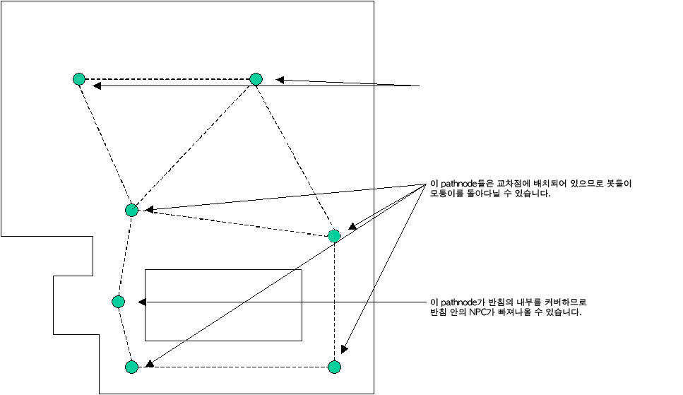

UDN
Search public documentation:
UsingWaypointsKR
English Translation
日本語訳
中国翻译
Interested in the Unreal Engine?
Visit the Unreal Technology site.
Looking for jobs and company info?
Check out the Epic games site.
Questions about support via UDN?
Contact the UDN Staff
日本語訳
中国翻译
Interested in the Unreal Engine?
Visit the Unreal Technology site.
Looking for jobs and company info?
Check out the Epic games site.
Questions about support via UDN?
Contact the UDN Staff
웨이포인트 사용하기
문서 변경내역: Richard Nalezynski 작성.
개요
기본 길찾기
NavigationPoint (내비게이션 지점)의 서브클래스) PathNode (패쓰노드)를 레벨의 표면에 배치하면 그 위로 NPC가 걸어다니게 되고, 볼륨에 놓으면 NPC가 헤엄쳐 다닐 수 있습니다. PlayerStarts (플레이어 시작점) 또한 NavigationPoints (내비게이션 지점)이기에 동일한 내비게이션 함수를 수행합니다. 게다가 InventorySpots (인벤토리 지점)도 패쓰를 빌드할 때 레벨의 모든 픽업 위치에 자동으로 놓이게 됩니다. (보이는 애들은 아니지만 얘들한테 연결된 패쓰는 볼 수 있습니다.)
PathNode (패쓰노드)가 연결되려면 거리가 언리얼 단위로 1200 (프로그래머가 nPath.h 의 MAXPATHDIST 를 변경하면 수정 가능) 이하여야 합니다. 두 개의 NavigationPoints (내비게이션 지점)이 너무 가까이 (있거나 겹쳐) 있으면 AI 내비게이션에 문제가 생기니 피해야 합니다. PathNode (패쓰노드) 를 배치할 때는 레벨의 모든 구역이 PathNode (패쓰노드) 또는 다른 NavigationPoint (내비게이션 지점)에 커버되도록 해야 합니다. 커버된 구역이라 함은, 1200 유닛 이하의 거리에 완전 막히지 않은(다른길로 돌아가지 않아도 되는) PathNode (패쓰노드)로 NPC가 걸어갈 수 있는 경우입니다.

패쓰 빌드하기
PathNode (패쓰노드)를 배치한 후, 빌드 메뉴에서 AI 패쓰 (또는 모두 빌드) 를 선택하면 NavigationPoints (내비게이션 지점) 간의 연결을 빌드할 수 있습니다.
일단 레벨에 패쓰가 많아지면 패쓰를 전부 리빌드하는데 시간이 꽤 걸릴 수 있습니다. 패쓰 배치를 조절하려면 Build Options 메뉴에서 Build Changed Paths 버튼을 사용합니다. 추가, 삭제, 이동된 NavigationPoints (내비게이션 지점)간의 패쓰만 리빌드합니다. 그러나 저장 및 레벨 플레이 전에 전체 패쓰를 리빌드해야 합니다.
빌드된 패쓰 보기
패쓰가 빌드 되었으면 모든 뷰포트의 Toggle Show Flags 메뉴에서 찾을 수 있는 Show Paths 옵션 플래그를 사용하여 다양한 레벨 뷰 창에서 볼 수 있습니다. 패쓰는 각기 다른NavigationPoint 인 라인으로 표시됩니다. 만약 NPC가 패쓰를 어느 한쪽 방향으로 가로질러갈 수 있으면 각 방향을 가리키는 화살표를 가진 두 개의 라인이 있을 것입니다. 그렇지 않으면 라인은 가로질러 갈 수 있는 패쓰의 방향으로 향한 화살표를 가진 선으로 표시될 것입니다.
패쓰글 사용하는 NPC가 적을지라도 PathNode (패쓰노드) 위치를 조절하여 연결 패쓰가 가능한 넓어질 수 있게 하는 것이 좋습니다. NPC는 코너를 부드럽게 둥글게 돌거나 패쓰간에 왔다 갔다 하여 공격함으로 패쓰가 클수록 더 자연스런 모습의 움직임을 초래하게 될 것입니다.
패쓰 색상 입히기
빌드되고나면, 패쓰는 중요 정보를 나타내는 다양한 색상으로 표시됩니다. 내비게이션 그래프 엣지의 기본 패쓰 색 정의는 다음과 같습니다:- 주황색 - 좁은 비행 패쓰
- 옅은 주황색 - 넓은 비행 패쓰
- 옅은 보라색 - (보통 점프력보다) 높은 점프 필요
- 파랑색 - 좁은 패쓰
- 초록색 - 보통 넓이
- 하양색 - 넓은 패쓰
- 분홍색 - 아주 넓은 패쓰
- 노랑색 - 강제 패쓰
- 보라색 - "고급" 패쓰 ("정보"(intelligence) 사용 필요)
- 빨강색 - "일방통행" 패쓰 (예로 A->B로는 가능하나 B->A로는 안되는 리치스펙(reachspec)이 있는 경우) (주: 최근 빌드에서 일방통행 상황을 쉽게 알아볼 수 있도록 빨강 점선으로 변경되었습니다.)
패쓰 디버깅
-
Viewclass Pawn- 의문가는 AI NPC 를 보기 위해. -
ShowDebug- AI NPC 가 무슨 생각을 하고 어떤 패쓰를 따르고 있는지를 확인하기 위해. -
RememberSpot- 레벨에서 내비게이션 패쓰 검사시 위치를 마크하기 위해. 그런 다음 (다른것을 보지 않고)ShowDebug를 사용하면 마킹된 위치로의 지속적인 업데이트 패쓰를 표시해 줍니다.
고급 패씽
문 (Door)
Door NavigationPoints (문 내비게이션 지점)은 문 역할을 하는 Mover 와 함께 배치되어야 합니다. (문의 위치에 따라 두 지역 사이의 이동을 허용하거나 차단합니다.) Door (문)은 영향 받은 지역의 중심(, 일반적으로 문에 사용된 실제 스태틱 메시 중앙에, 하지만 바닥에 접할 만큼 낮은 곳)에 배치해야 합니다. Door NavigationPoint 에는 필요에 따라 업데이트해야 하는 중요 속성도 여럿 있습니다.
- DoorTag -
Door와 연관된Mover의 태그. - DoorTrigger - 만약
Door가 트리거된 경우,Door를 열게 되는 트리거 액터의 태그입니다. - bInitiallyClosed -
Mover의 기본 상태가 이동을 허용하는지 여부 (false 면 허용, 기본값 true 면 차단). - bBlockedWhenClosed -
Mover가 닫힌 경우, NPC는 열 수 없습니다. (기본값은 false).
Movers 는 이제 bAutoDoor 속성을 가집니다. True로 설정되면 해당 Mover 에 대한 Door PathNode 가 자동으로 생성됩니다. 이는 대부분의 Doors 에서 작동합니다.
점프 패드 (JumpPad)
JumpPad (점프 패드)는 지정된 방향으로 접촉한 Pawn (폰)을 내던집니다. JumpPad (점프 패드)는 ForcedPaths[] 배열 속성 중 첫 항목에 목적지 PathNode (패쓰노드)를 지정하는 식으로 설정됩니다. 점프 속도는 패쓰가 리빌드될 때 자동으로 계산됩니다. JumpPad (점프 패드)의 JumpModifier 벡터 속성은 자동으로 생성된 속도에 문제가 있을때 설정 가능합니다.
점프 목적지 (JumpDest)
JumpDests (점프 목적지)는 점프하기에는 너무 높지만, 그 아래의 패쓰에 연결된 경우 PathNode (패쓰노드) 대신 사용해야 합니다. JumpSpot (점프 지점)은 점프 부스트 등을 갖고 있는 저중력 상태의 NPC가 사용합니다. JumpSpot (점프 지점)으로 점프해야 하는 봇의 패쓰에는 그 ForcedPath[] 배열 속성 항목 중 하나에 JumpSpot (점프 지점)이 있어야 합니다.
리프트 (Lift)
리프트로 사용되는Mover 는 결코 BumpOpenTimed 상태를 사용할 수 없(으며 대신 StandOpenTimed 사용할 수 있)습니다. Lift (리프트)로 사용되는 Movers 는 두가지 유형의 NavigationPoints (내비게이션 지점)을 가집니다. LiftCenter 는 리프트의 중앙에 배치되야 합니다. LiftExit 은 Lift (리프트)의 각 출구에 배치되야 합니다 (그러나 충분히 멀리 떨어져 있어서 거기에 서있는 NPC 가 Lift (리프트)를 방해하지 않게 되야 합니다). LiftCenter 와 LiftExits 모두는 반드시 Mover 의 태그로 설정되야 하는 LiftTag 속성을 가지고 있습니다. 또한 리프트가 유발되면 트리거링 액터의 태그를 LiftCenter 의 LiftTrigger 속성에 붙입니다. LiftExits 는 LiftExit 가 사용될때 무버의 키프레임 수로 설정될 수 있는 선택 속성인 SuggestedKeyFrame 을 가집니다. 어떤 경우 NPC의 내비게이션을 향상시킬 수 있습니다.
사다리 (Ladder)
LadderVolume (사다리 볼륨)은 반드시 (LadderVolume (사다리 볼륨) 선택시 화살표로 표시되는 WallDir 속성을 조절하여) 기어오르는 벽쪽을 향하도록 해야 합니다. 대부분의 경우, 패쓰가 빌드되면 LadderVolume (사다리 볼륨) 위아래에 사다리 NavigationPoints (내비게이션 지점)이 자동으로 추가되도록 할 수 있습니다. 그러나 자동으로 배치되는 사다리에 문제가 생기는 경우, 레벨 디자이너는 LadderVolume (사다리 볼륨) bAutoPath 속성을 false 로 설정한 후 수동으로 사다리를 배치하면 됩니다. 사다리 중심은 반드시 LadderVolume (사다리 볼륨) 내에 있어야 합니다. LadderVolume (사다리 볼륨)은 그 밑이 바닥에 닿야 하고, 최소한 사다리를 사용하는 가장 큰 NPC가 윗면의 엣지에 들이댈 수는 있을 만큼은 되어야 합니다.
볼륨 패쓰 노드 (VolumePathNode)
VolumePathNode(볼륨 패쓰 노드)는 볼륨을 통한 내비게이션, 예를 들어 수영이나 비행시에 좋습니다. 볼륨 패쓰 노드의 충돌 원통은 지나다닐 수 있는 볼륨을 말합니다. 패쓰 빌드 도중, 충돌 원통의 크기는 장애물에 달할 때까지 레벨 디자이너가 (StartingRadius 및 StartingHeight 속성을 사용하여) 지정한 초기 반경 및 높이를 기준으로 조절됩니다. 최적의 결과를 얻기 위해서는 볼륨 패쓰 노드의 초기 원통 크기와 (통행 가능 구역의 중앙쯤에서부터 시작해서) 위치를 조절하는 것이 좋습니다. 볼륨 패쓰 노드는 다른 겹치는 볼륨 패쓰 노드는 물론, 그 볼륨 내의 내비게이션 지점과도 연결됩니다. 게다가 볼륨 패쓰 노드 원통 바로 아래의 내비게이션 지점은 패쓰 빌드 도중 연결성 검사도 수행됩니다. VCTF-Sandstorm처럼 UTGame 탈것이 있는 레벨은 볼륨 패쓰 노드의 데모가 됩니다.커버 링크 (Cover Link)
CoverLinks (커버 링크)는 기어즈 오브 워 를 위해 개발되었습니다. 다음 설정이 사용됩니다. - bCircular = 원형의 커버를 만들기 위해 이것을 확인. 예. 원통을 감싸는 커버. 보통 원통의 양 옆에 위치한 두 개의 커버 노드를 사용하여 실행됩니다.
- bClaimAllSlots = 만약 AI 가 이 은신처에 들어오면 또 다른 AI 는 이 장소에서 숨는 것을 시도할 수 없습니다.
- MaxFireLinkDist = 두 커버 사이에 AI 발사 링크를 생성하기 위해 커버 슬롯이 다른 커버 슬롯에 문의하는 최대 거리 (거기서 숨는 동안 어디에 발사할 수 있느느지 Gears AI 에 알려줌).
- bCanPopUp = 액터가 서 있고 발사할 수 있다고 생각되는 슬롯을 디자이너에게 보여줍니다.
- bAllowPopUp = 액터가 여기서 일어서서 발사할 수 있기를 원하면 이 플래그를 설정합니다.
- bAllowMantle = 이 커버를 액터가 오를 수 있기를 원하면 이 플래그를 설정합니다.
- bAllowCoverslip = 액터가 이 커버를 미끌어져 나갈 수 있기를 원하면 이 플래그를 설정합니다 (가장자리에서만 작동합니다).
- bAllowSwatTurn = 액터가 이 커버로 또는 이 커버에서 스와트 턴을 할 수 있기를 원하면 이 플래그를 설정합니다 (가장자리에서만 작동합니다).
패쓰 사이즈 변경 (프로그래머용)
PathSizes 배열을 변경하십시오. 기본값은 다음과 같습니다:
PathSizes(0)=(Desc=Human,Radius=48,Height=80)
PathSizes(1)=(Desc=Common,Radius=72,Height=100)
PathSizes(2)=(Desc=Max,Radius=120,Height=120)
PathSizes(3)=(Desc=Vehicle,Radius=260,Height=120)